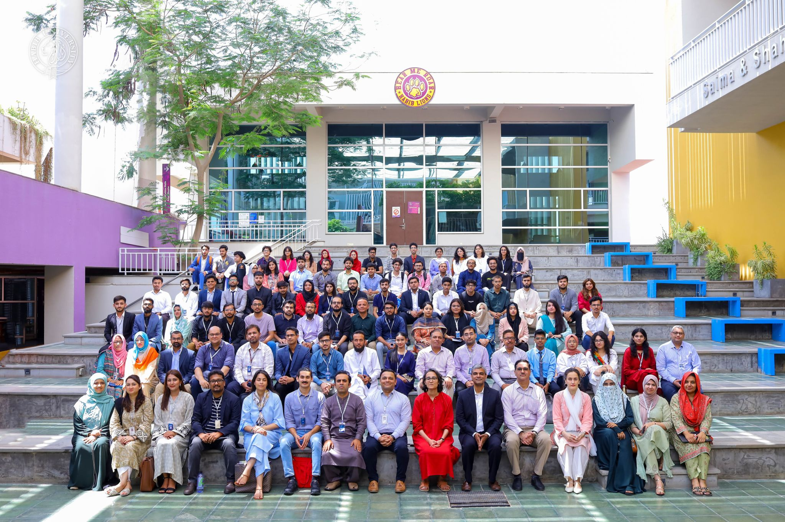
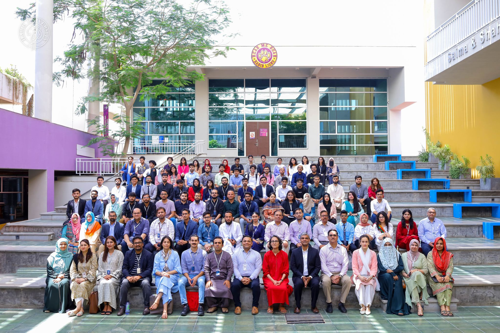

Lip2Urdu Project
Lip2Urdu - Lip-to-Speech Synthesis in Urdu Language, secured 2nd place in the Best Poster category at the Habib University's DSSE Symposium for Undergraduate Research (DURS). 🎉
The Habib University Undergraduate Research Symposium is a prestigious event that brings together young scholars to present their innovative research across various disciplines. It provides an excellent platform for students to showcase their work, engage with peers and experts, and gain recognition for their contributions to their respective fields. This year's symposium was a remarkable gathering of bright minds, fostering an environment of learning and collaboration.
Our project, Lip2Urdu - Lip-to-Speech Synthesis in Urdu Language, delves into the fascinating area of teaching computers to interpret lip movements and generate corresponding speech in Urdu. Given that most existing research in lip-to-speech synthesis focuses on English, our work addresses a significant gap by developing a model tailored for the Urdu language. We curated a diverse corpus of muted video files featuring Urdu speakers and implemented a sequence-to-sequence architecture for lip-reading tasks. Our research not only advances the field of speech synthesis but also holds potential applications in areas such as surveillance, healthcare, and accessibility, particularly for individuals with hearing and speech impairments.
 
